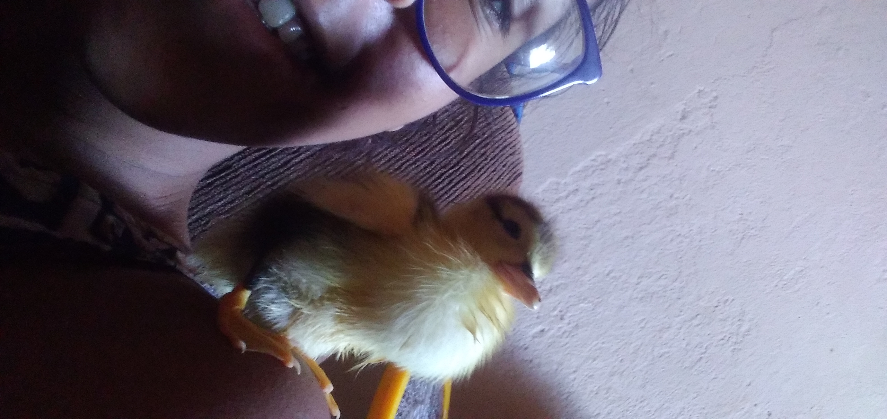
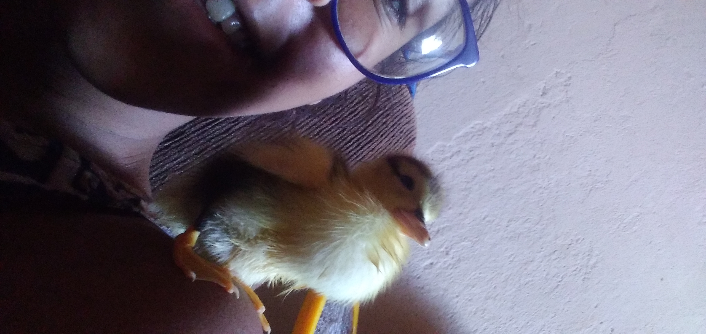
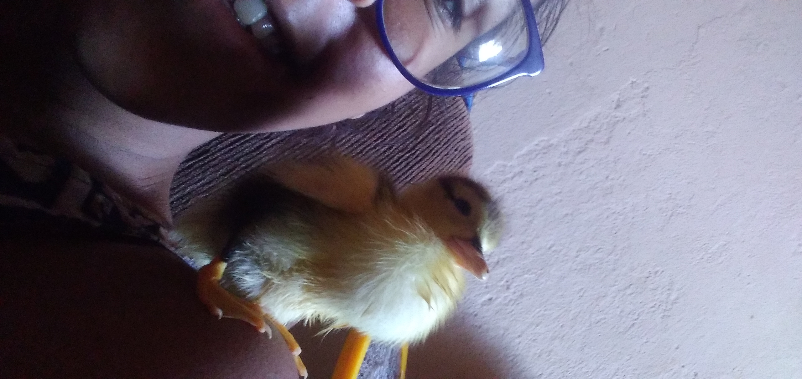

Olá galera, meu nome é Ana Luiza e hoje eu vou falar um pouco sobre algumas coisas que gosto de fazer quando tenho tempo livre.
A vida corrida de estudante chega a ser muito estressante, por isso, resolvi compartilhar um pouco dos meus hobbies, não que eu os faça com frequencia, mas tamo ae.
(A maioria dessas fotos foi eu que tirei)
Sim, eu sei, parece coisa de velho, mas eu acho muito legal!
A música consegue moldar sentimentos de muitas formas, serve para animar, acalmar, demonstrar amor e ódio. Gosto de ouvir musica em todos os momentos, é como sair da realidade.
Abaixo segue uma playlist ds duas das minhas artistas favoritas
Quando me sinto muito agitada, gosto de caminhar sozinha em algum lugar com muitas árvores, pois além de acalmar os pensamentos, eu ainda consigo aliviar a agitação por meio do exercício físico
Se em vez de agitação, eu sentir um cansaço fisico e mental, a melhor coisa a se fazer é ir para um local calmo ao ar livre, assim é possivel ouvir os sons da natureza e contemplá-la. Pode ser num jardim, praça, ou até mesmo no estacionamento do IF.
Ver o Sol se por, me lembra de que tudo é passageiro, inclusive o sofrimento. Alguns dias são mais longos que outros, mas eles sempre terminam, se transformam e recomeçam, assim como nós seres humanos.
Você não precisa ser artista, só precisa de criatividade. Pode ser desde tocar algum instrumento, escrever textos, fazer artesanato ou quem sabe fazer desenhos (todo rabisco é arte). O importante é liberar a criatividade!
Animais são muito fofos, eles têm o poder de acalmar sem dizer uma palavra, amar incondicionalmente e te deixar feliz sem esforço. Obrigado aos animaizinhos que ja passaram pela minha vida

Muitas vezes estamos tão presos na nossa bolha de sentimentos que não paramos para observar o quanto a vida é bonita, isso pode nos ajudar a manter a paz às vezes.
No RPG voce interpreta personagens, entra num universo completamente novo e incrivel, se quiser saber mais sobre o universo que eu jogo, entre na pagina do meu amigo Pedro Paz